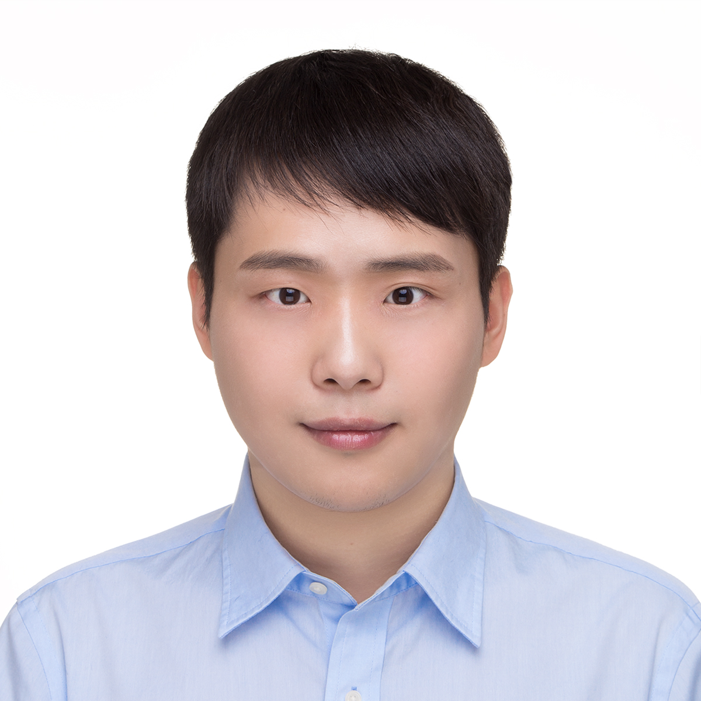

Zhen Fang (Lecturer at UTS-AAII)
Home
|  |
Zhen Fang
Lecturer @ DeSI Lab,
Australian Artificial Intelligence Institute,
UTS
Address: Level 12, UTS Central,
61 Broadway, Ultimo, Sydney, NSW2007, Australia.
E-mail: zhen.fang [at] uts.edu.au
[Google Scholar]
[Github]
I am always looking for highly self-motivated PhD/RA/Visiting students and Postdoc researchers. Meanwhile, I am happy to host remote research trainees. I have a long-term cooperation with Dr. Feng Liu . If you want to work at Melbourne, I can recommend you to Dr. Feng Liu at The University of Melbourne. Thanks!
|
Biography
I am a machine learning researcher with research interests in transfer learning and out-of-distribution learning.
I am currently a Lecturer (Assistant Professor) at Decision Systems and e-Service Intelligence (DeSI) Lab, Australian Artificial Intelligence Institute (AAII), University of Technology Sydney (UTS), Australia. I am the recipient of the Australian Laureate postdoctoral fellowship. I have completed my Ph.D. degree in computer science at UTS-AAII in Oct 2021.
Research Interests
My research interests lie in Machine Learning, Transfer Learning, Statistical Learning Theory, Generalized Out-of-Distribution Learning. Specifically, my current research work center around three major topics:
Transfer Learning: Transferring knowledge from a source domain to a target domain. Statistical Learning Theory: Estimating the generalization error of a given problem or algorithm. Generalized Out-of-Distribution Learning: Learning a generalized well model or learning a model with OOD detection abaility.
Research Experience
Lecturer (Research Intensive) (02.2023--11.2023)
Project: Transfer Learning
Postdoc (07.2021--02.2023)
Project: Transfer Learning
Research Assistant (06.2021--07.2021)
Project: Transfer Learning
|